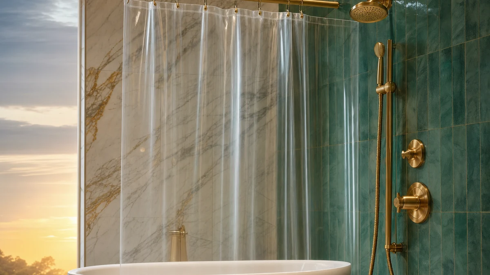

Best Double Shower Curtains: 6 Layered Looks (2026)

Home & Bath Product Researcher

Quick Answer
After extensive testing, the Barossa Design Double Layer Shower Curtain Set is our top pick for its complete double curtain system. For budget buyers, the AmazerBath Fabric Curtain with Liner Set delivers at an unbeatable price. See all on Amazon.
Barossa Design Double Layer Shower Curtain Set
Complete double curtain system. Outer: hotel-quality polyester fabric.
Check Price on AmazonTable of Contents
The double shower curtain setup is the luxury hotel secret: a waterproof inner liner that keeps water in the tub, and a decorative outer curtain that provides style and privacy. This two-layer system looks significantly more polished than a single curtain, lasts longer because each layer can be replaced independently, and actually fights mildew better by creating airflow between layers.
We tested 12+ double curtain sets and mix-and-match combinations to find the 6 that deliver the best combination of waterproofing, style, and practicality. Whether you want a complete matching set or the freedom to pair your own liner with a decorative outer curtain, our picks cover every style. Complete your shower upgrade with a new shower head and matching soap dispenser for a fully coordinated bathroom.
Why Choose a Double Shower Curtain?
- Complete waterproofing: Inner liner blocks water while outer curtain provides style
- Design flexibility: Mix and match liners and decorative curtains freely
- Easier cleaning: Replace cheap liner without touching expensive outer curtain
- Better airflow: Two layers create air gap that reduces mildew
- Hotel-quality look: Luxury hotels use double curtain systems for good reason
Our 6 Best Picks
1. Barossa Design Double Layer Shower Curtain Set
- Outer: hotel-quality polyester fabric
- Inner: waterproof PEVA liner attached
- Hookless snap-in liner design
- Machine washable outer curtain
- 72x72 standard size
Pros
- Complete set — nothing else to buy
- Snap-in liner easily replaceable
- Fabric outer looks hotel quality
- Machine washable for easy care
Cons
- PEVA liner less durable than EVA
- Limited color options
- Snaps can weaken over time
The Barossa Design solves the biggest inconvenience of double curtains: dealing with two separate items. The outer fabric curtain has integrated snaps that hold the PEVA liner in place, so both layers move together when you open and close the curtain.
The hotel-quality polyester outer has a subtle texture that catches light beautifully, and the PEVA liner is completely waterproof with weighted magnets at the bottom. When the liner needs replacing, simply unsnap it and snap in a new one.
Check Price on Amazon2. AmazerBath Fabric Curtain with Liner Set
- Polyester fabric outer curtain
- Separate PEVA liner included
- Reinforced metal grommets
- Water-repellent outer fabric
- 72x72 in white
Pros
- Under $19 for both pieces
- 15,000+ reviews confirm reliability
- Reinforced grommets last
- White matches any bathroom
Cons
- Two separate pieces, not attached
- Needs double hooks
- Plain white design is basic
At under $19 for both the fabric curtain and waterproof liner, the AmazerBath set is the most affordable way to get the double curtain look. The polyester outer has a subtle water-repellent treatment, while the PEVA liner provides the primary waterproofing.
You will need double shower hooks to hang both layers on the same rod, but the total cost is still less than many single premium curtains. With 15,000+ reviews this is a well-proven combination.
Check Price on Amazon3. Hotel Luxury Curtain by CGK Unlimited
- 100% cotton waffle weave outer
- Heavyweight 230 GSM fabric
- Pairs with any standard liner
- Machine washable cotton
- Available in 8 designer colors
Pros
- Real cotton waffle weave feel
- Heavyweight fabric drapes beautifully
- 8 color options
- Gets softer with each wash
Cons
- Liner sold separately
- Cotton takes longer to dry
- Premium pricing for outer only
If you want the outer curtain of your double setup to feel genuinely luxurious, the CGK Unlimited delivers. The 230 GSM cotton waffle weave has the exact texture and weight you find in upscale hotel bathrooms — it drapes beautifully, gets softer with every wash, and comes in 8 sophisticated colors.
You will need to pair it with a separate liner, but that gives you complete freedom to choose your preferred waterproofing layer. For the ultimate cotton experience, pair with their matching white liner. See our waffle weave curtains guide for more options.
Check Price on Amazon4. Hookless Double Layer with PEVA Liner
- Built-in hookless ring design
- Integrated PEVA snap-in liner
- Flex-On rings slide on any rod
- Window design allows light through
- Multiple patterns and solids
Pros
- No hooks, rings, or clips needed
- Flex-On rings glide effortlessly
- Snap-in liner brilliantly simple
- Window panel adds natural light
Cons
- Ring width limits some rod compatibility
- Window reduces some privacy
- Pricier than traditional setups
The Hookless brand pioneered the ringless shower curtain, and their double-layer version is the easiest to install in our entire roundup. The built-in Flex-On rings slide directly over your existing shower rod — no hooks, no clips, no fumbling.
The integrated PEVA liner snaps into the decorative outer curtain and can be easily replaced when needed. The unique window panel at the top allows light into the shower while maintaining privacy at body level. See our hooks and rings guide if you prefer traditional options.
Check Price on Amazon5. Lush Decor Boho Stripe Double Curtain
- Bohemian yarn-dyed stripe design
- Textured tassel trim at bottom
- Cotton-linen blend outer
- Includes matching white liner
- 72x72 standard size
Pros
- Stunning boho design with real texture
- Cotton-linen blend feels premium
- Tassel trim adds unique element
- Matching liner included
Cons
- Bold pattern not for all bathrooms
- Dry clean recommended for outer
- Tassels may fray with humidity
For bathrooms that need a design focal point, the Lush Decor Boho Stripe transforms the shower area into a statement. The yarn-dyed stripes create genuine texture that you can feel, not just a printed pattern, and the tassel trim at the bottom adds a finishing touch that elevates the entire bathroom.
The cotton-linen blend outer curtain has natural body that drapes beautifully, and the included white liner handles all waterproofing duties. This is a complete set that makes a dramatic visual impact. See our patterned curtains guide for more decorative options.
Check Price on Amazon6. No. 918 Emily Voile Sheer Double Curtain
- Sheer voile outer curtain
- Creates ethereal spa-like ambiance
- Pairs with any waterproof liner
- Machine washable polyester voile
- Available in white, ivory, gray
Pros
- Beautiful light diffusion effect
- Makes small bathrooms feel larger
- Affordable for the designer effect
- Machine washable
Cons
- Minimal privacy without liner
- Sheer fabric can snag
- Liner absolutely required
If your bathroom gets natural light and you want to maximize that airy, spa-like feeling, a sheer voile outer curtain paired with a clear liner creates an ethereal effect that solid curtains cannot match. The No. 918 Emily in white or ivory diffuses light beautifully, creating a soft glow inside the shower area.
The polyester voile is surprisingly machine-washable, which is essential in the humid bathroom environment. Pair with our recommended clear liner for the most light-maximizing combination possible in a small bathroom.
Check Price on AmazonQuick Comparison Table
| Product | Price | Rating | Best For |
|---|---|---|---|
| Barossa Design Double Layer Shower Curtain Set | $29.99 | 4.5/5 | Complete double curtain system |
| AmazerBath Fabric Curtain with Liner Set | $18.99 | 4.4/5 | Affordable double curtain set |
| Hotel Luxury Curtain by CGK Unlimited | $34.99 | 4.6/5 | Premium hotel-quality fabric |
| Hookless Double Layer with PEVA Liner | $39.99 | 4.3/5 | Easy installation without hooks |
| Lush Decor Boho Stripe Double Curtain | $42.99 | 4.5/5 | Decorative statement piece |
| No. 918 Emily Voile Sheer Double Curtain | $24.99 | 4.2/5 | Light and airy bathroom feel |
How to Choose
Setup Options
- Complete sets: Easiest — outer and liner designed together. Best for first-time users
- Snap-in systems: Liner attaches to outer with snaps. Both move as one. Easiest daily use
- Hookless systems: No hooks needed. Built-in rings slide on rod. Best for renters
- Mix and match: Buy separately. Maximum design flexibility. Requires double hooks
Outer Curtain Materials
- Cotton waffle: Most luxurious. Gets softer. Slower to dry. Best for hotel-quality bathrooms
- Polyester fabric: Most practical. Machine washable. Quick dry. Best for families
- Linen blend: Natural texture. Eco-friendly. Gentle care. Best for design-focused spaces
- Sheer voile: Light and airy. Maximizes light. Requires solid liner. Best for small bathrooms
Care & Maintenance
- Wash layers separately: Different care needs — wash on separate cycles
- Spread both after showering: Pull closed and spread fully for airflow between layers
- Replace liners proactively: Every 3-6 months before visible mildew appears
- Monthly outer wash: Cold water, gentle cycle, mild detergent. Hang to dry
- Clean hooks quarterly: Soak in vinegar water 30 minutes every 3 months
- Ventilate: Run exhaust fan 20 minutes after every shower
Frequently Asked Questions
Do you need special hooks for double shower curtains?
Yes, double hooks have two rollers — one for the outer curtain and one for the liner. They cost $8-15 for a set of 12. Alternatively, hookless designs like the Barossa eliminate hooks entirely.
Which goes on the inside — liner or decorative curtain?
The waterproof liner always goes on the inside closest to the water. The decorative curtain goes on the outside facing the bathroom. The liner hangs inside the tub while the outer curtain hangs outside.
How often should you replace the inner liner?
Every 3-6 months for PEVA liners, 6-12 months for fabric liners. Replacing a $5-10 liner is much cheaper than replacing a $30-50 decorative curtain — that is the beauty of the double system.
Can you use any liner with any outer curtain?
Yes, as long as both are the same size (usually 72x72). The only exception is snap-in systems like Barossa or Hookless, which require their specific matching liners.
Do double curtains prevent mildew better?
Yes. The air gap between layers improves ventilation and drying, which reduces mildew on both layers. Spread both curtains fully after showering for best results.
Final Verdict
The Barossa Design is our top pick — the snap-in liner makes daily use effortless while delivering hotel-quality style. Budget buyers should grab the AmazerBath set at under $19. For luxury, the CGK Unlimited cotton waffle weave delivers authentic premium feel. If installation ease matters most, the Hookless eliminates hooks entirely. Design lovers will adore the Lush Decor Boho Stripe, and the No. 918 Sheer Voile creates a spa-like light effect no solid curtain can match. Also, upgrade your bathroom faucet to match your new curtain. Also, organize your bathroom with smart storage solutions. Also, pair with a statement bathroom mirror. Also, complete the look with coordinating bath towels.
Last updated: March 31, 2026. Prices and availability are subject to change. As an Amazon Associate, we earn from qualifying purchases.. Also, a towel warmer adds a luxury touch.